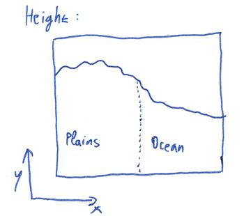
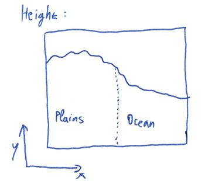

This article explains the principles behind the terrain generator in MCServer. It is not strictly specific to MCServer, though, it can be viewed as a generic guide to various terrain-generating algorithms, with specific implementation notes regarding MCServer.
The nature has many complicated geological, physical and biological processes working on all scales from microscopic to planet-wide scale, that have shaped the terrain into what we see today. The tectonic plates collide, push mountain ranges up and ocean trenches down. Erosion dulls the sharp shapes. Plantlife takes over to further change the overall look of the world.
Generally speaking, the processes take what's there and change it. Unlike computer generating, which usually creates a finished terrain from scratch, or maybe with only a few iterations. It would be unfeasible for software to emulate all the natural processes in enough detail to provide world generation for a game, mainly because in the nature everything interacts with everything. If a mountain range rises, it changes the way that the precipitation is carried by the wind to the lands beyond the mountains, thus changing the erosion rate there and the vegetation type.
For a MineCraft-like game terrain generator we need the generator to have several properties:
As already mentioned, the nature works basically by generating raw terrain composition, then "applying" erosion, vegetation and finally this leads to biomes being formed. Let's now try a somewhat inverse approach: First generate biomes, then fit them with appropriate terrain, and finally cover in vegetation and all the other stuff.
Splitting the parts like this suddenly makes it possible to create a generator with the required properties. We can generate a reasonable biome map chunk-wise, independently of all the other data. Once we have the biomes, we can compose the terrain for the chunk by using the biome data for the chunk, and possibly even for neighboring chunks. Note that we're not breaking the first property, the biomes can be generated separately so a neighboring chunk's biome map can be generated without the need for the entire neighboring chunk to be present. Similarly, once we have the terrain composition for a chunk, we can generate all the vegetation and structures in it, and those can again use the terrain composition in neighboring chunks.
This leads us directly to the main pipeline that is used for generating terrain in MCServer. For technical reasons, the terrain composition step is further subdivided into Height generation and Composition generation, and the structures are really called Finishers. For each chunk the generator generates, in this sequence:
 



The beautiful thing about this is that the individual components can be changed independently. You can have 5 biome generators and 3 height generators and you can let the users mix'n'match.
For a great tutorial on coherent noise, see the LibNoise documentation.
Coherent noise is a type of noise that has three important properties that we can use to our advantage:
We'll be mostly using Perlin noise in this article. It is the easiest one to visualise and use and is one of the most useful kinds of coherent noises. Here's an example of a Perlin noise generated in 2 dimensions:

It comes only naturally that such a 2D noise can be used as a terrain height map directly:

However, this is not the only use for this noise, and 2 dimensions is not the limit - this noise can be generated for any number of dimensions.
The easiest way to generate biomes is to not generate at all - simply assign a single constant biome to everywhere. And indeed there are times when this kind of "generator" is useful - for the MineCraft's Flat world type, or for testing purposes, or for tematic maps. In MCServer, this is exactly what the Constant biome generator does.
Of course, there are more interesting test scenarios for which multiple biomes must be generated as easy as possible. For these special needs, there's a CheckerBoard biome generator. As the name suggests, it generates a grid of biomes.
These two generators are more of a technicality, we need to make something more interesting if we're going for a natural look. The Voronoi generator is the first step towards such a change. Recall that a Voronoi diagram is a construct that creates a set of areas where each point in an area is closer to the appropriate seed of the area than the seeds of any other area:

The overall shape of a Voronoi diagram is governed by the placement of the seeds. In extreme cases, a seed could affect the entire diagram, which is what we don't want - we need our locality, so that we can generate a chunk's worth of biome data. We also don't want the too much irregular diagrams that are produced when the seeds are in small clusters. We need our seeds to come in random, yet somewhat uniform fashion.
Luckily, we have just the tool: Grid with jitter. Originally used in antialiasing techniques, they can be successfully applied as a source of the seeds for a Voronoi diagram. Simply take a regular 2D grid of seeds with the grid distance being N, and move each seed along the X and Y axis by a random distance, usually in the range [-N / 2, +N / 2]:

Such a grid is the ideal seed source for a Voronoi biome generator, because not only are the Voronoi cells "reasonable", but the seed placement's effect on the diagram is localized - each pixel in the diagram depends on at most 5 x 5 seeds around it: